Next: Waveshaping using an exponential
Up: Examples
Previous: Waveshaping and difference tones
Contents
Index
Example E05.chebychev.pd (Figure 5.12) demonstrates how you can use waveshaping
to generate pure harmonics. We'll limit ourselves to a specific example here
in which we would like
to generate the pure fifth harmonic,
Figure 5.12:
Using Chebychev polynomials as waveshaping transfer functions.
| 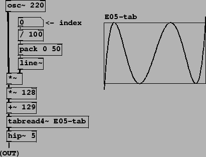 |
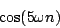
by waveshaping a sinusoid
We
need to find a suitable transfer function  . First we recall
the formula for the waveshaping function 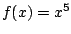
(Page
. First we recall
the formula for the waveshaping function 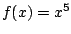
(Page ![[*]](file:/usr/local/share/lib/latex2html/icons/crossref.png) ), which gives first,
third and fifth harmonics:
), which gives first,
third and fifth harmonics:
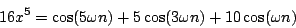
Next we add a suitable multiple of 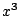 to
cancel the third harmonic:
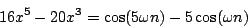
and then a multiple of  to cancel the first harmonic:
to cancel the first harmonic:
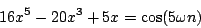
So for our waveshaping function we choose
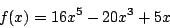
This procedure allows us to isolate any desired harmonic; the resulting
functions  are known as
Chebychev polynomials [Leb79].
are known as
Chebychev polynomials [Leb79].
To incorporate this in a waveshaping instrument, we simply build a patch
that works as in Figure 5.5, computing the expression
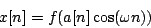
where 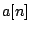 is a suitable
index
which may vary as a function of the sample number  . When
. When  happens to
be one in value, out comes the pure fifth harmonic. Other values of
give varying spectra which, in general, have first and third harmonics as
well as the fifth.
happens to
be one in value, out comes the pure fifth harmonic. Other values of
give varying spectra which, in general, have first and third harmonics as
well as the fifth.
By suitably combining Chebychev polynomials we can fix any desired
superposition of components in the output waveform (again, as long as
the waveshaping index is one). But the real
promise of waveshaping--that by simply changing the index we can
manufacture spectra that evolve in interesting but controllable ways--is
not addressed, at least directly, in the Chebychev picture.
Next: Waveshaping using an exponential
Up: Examples
Previous: Waveshaping and difference tones
Contents
Index
Miller Puckette
2006-12-30